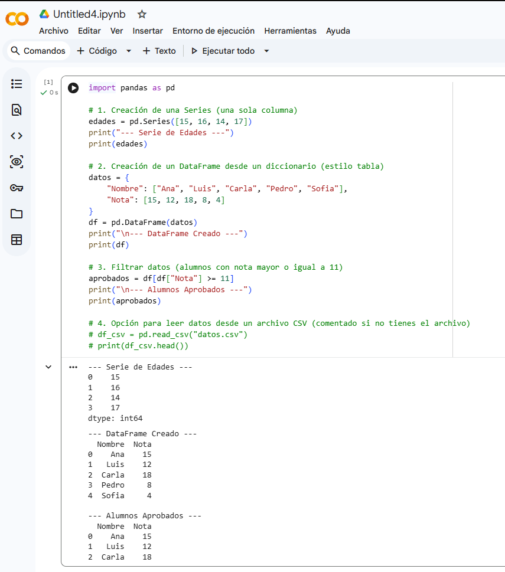

¿Qué es pandas?
pandas es una librería de Python que sirve para trabajar con datos en forma de tablas: leerlos, ordenarlos y filtrarlos. Antes de usarla en Google Colab hay que importarla:
import pandas as pdSeries y DataFrame
Una Series es una lista de datos con un índice (una sola columna):
edades = pd.Series([15, 16, 14, 17])
print(edades)Un DataFrame es una tabla con filas y columnas, parecida a una hoja de Excel:
datos = {
"Nombre": ["Ana", "Luis", "Carla"],
"Nota": [15, 12, 18]
}
df = pd.DataFrame(datos)
print(df)Leer datos
Con read_csv se lee un archivo CSV y con head() se muestran las primeras filas:
df = pd.read_csv("datos.csv")
print(df.head())Filtrar datos
Para filtrar se escribe una condición dentro de corchetes. Este ejemplo muestra solo los alumnos con nota mayor o igual a 11:
aprobados = df[df["Nota"] >= 11]
print(aprobados)